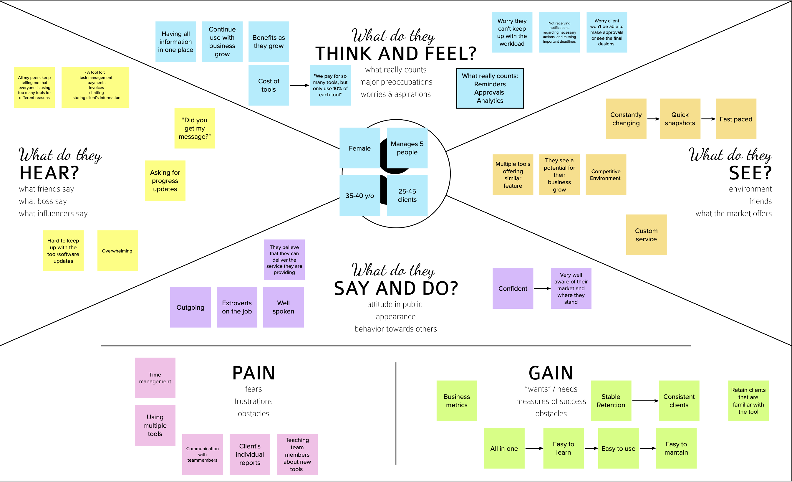

Cloud Campaign: Design of Agency Hub Service Management Feature
During Summer 2022, I was a Product Design Intern at Cloud Campaign (CC), a white-label, scalable social media management and marketing
software company. As an intern, I worked on both their Social Suite product and Agency Hub beta-release
product.
Agency Hub(AH) is a social media agency management software that allows agencies to organize
their clients needs, plans, and to-dos all in one place. The beta-release of this product launched during
summer 2022.
Throughout the summer, I worked on a feature called “Service Management”, which
would allow agencies to assign their specific plans(how much social media management their client pays for)
to specific clients. I worked on this feature from beginning to end of the UX
design process.
This new feature is meant to help agencies define and assign their
specific services to each customer they are managing. A service is a task that an agency
will help their clients with, such as social media management or
email marketing management. With the service management function, agencies would be able to create different
‘tiers’ of each service, or amounts of service that they would give to different paying
customers. Agencies would then be able to assign those specific service tiers to different customers
they are managing in Agency Hub.
What is Package Management?
The other part of this feature is meant to help agencies build
groupings of their services, known as packages. Packages bundle several different types of
services together to make it easier for clients to pay for several services at once at a specified
rate.
CREATING A PERSONA:
When developing the first few features for Agency Hub, the product team at Cloud Campaign was under a time
crunch and went straight to the design phase. That led to many iterations of the design, and once the beta
release product was launched, the first task was to create a detailed persona.
The main persona we
decided would use Agency Hub would be an Administrator for an account at a social media agency. Our persona
was female, 35-40 years old, managing a team of 5 with 25-45 clients.

Some of the biggest parts to stand out from the persona included:
They want all of their information in one place
The cost of using multiple tools is expensive
"We pay for so many tools but only use 10% of each”
Their customer’s ideas and thoughts are always changing, and it's hard to keep up with
Pains:
Teaching new tools
Time Management
Team Communication
Gains:
Business Metrics
Easy to Learn, Use, and Maintain (All in One)
SERVICE MANAGEMENT DESIGN PRIORITIES:
1. Keep the page flow simple and intuitive. There shouldn’t be that many
pages to navigate between, and the design should emulate what is on Social Suite and already on Agency Hub.
2. Allow the design to be scalable. Agency Hub can be used for agencies with
5 clients to agencies with 50 clients as well as 5 services to 50 services, and the pages should give the same
experience regardless.
DEVELOPING PRODUCT OUTLINE USING PRD:
Using the Product Requirements Document(PRD) written by the Product Manager, I
worked with 2 other UI UX
designers to design an outline of what the Service Management feature would look like.
We used Figma Jam to create these outlines. The design was based on the existing layout of the beta launch
Agency Hub product, with a menu bar on the right side. Service Management was added as a tab that could be
clicked into. At the top of the page, there are two tabs, one for services and one for packages.
We
kept the page flow fairly simple. The Services page had two different pages, one to create a
service and one to see all current services an agency offers. There would be pop ups to assign a client to or
delete a client from specific services, as well as a way to edit each service and their respective tiers.
There was also a space for functionality to delete a service completely from an agency's offerings.
We
duplicated this flow for the Packages page, keeping one to create packages and one to see all current
packages, as well as pop ups to add, edit, or delete packages.
Once the outline included everything
from the PRD and every functionality we wanted to add, we sent the file to the Product Manager and CEO for
review and feedback.
INTIAL DESIGN:
When developing the low fidelity designs, we focused more on the overall layout of each page and how we were
going to fit all of the information in without overwhelming the users.
We built the navigation to the Service Management feature off of the previous Agency Hub designs, with a
link through the side menu.
Both the services and packages pages were formatted in a similar table to
ensure consistency. The tables were also constructed with an emphasis on scalability, so that companies could
still navigate the page easily regardless of the number of services or packages they created. We included
an easy menu to switch back and forth between each feature at the top of the page.
For several of the mock-ups pages, we didn’t go into full depth with the pop-up screens, and instead added
them to the side of the lo-fi design with comments so the Product Manager and CEO could understand our thought
process.
Out of the pop-ups, the one we thought the most about was for deleting services. Often this
button can be
pressed accidentally, so we created an extra step for confirming deletion due to the large action that will
occur if a service is deleted.
The second iteration designs incorporated the look of actual agencies using the feature with several
clients. We inputted fake information to fill out all the pages to understand if the information we designated
to the area would be appropriate.
We then took this design and prototyped it for user testing,
including relevant links from frame to frame that would allow the participant to explore each page with some
guidance.
USER TESTING:
To test the prototype, we met with several current users of the beta release of Agency Hub. They were
instructed to vocalize what they were thinking as they went through the flow as well
as to answer the
questions listed below.
Questions that were asked before going through flow:
If you were looking for Service Management, where would you expect to find it?
What do you think can be done within this page?
Some of the tasks we asked them to do in the flow:
Can you please create a service, add multiple tiers and save the client's information?
Add a client to the social media gold service.
Delete the entire SMS Marketing service.
Questions that were asked after going through flow:
What are your thoughts on the language used?
How easy or difficult was it to navigate?
The users completed the tasks easily and with little thought. They were able to find out where certain
functionality was stored within the page and understand how to use it very quickly. When asked how
easy or difficult the page was to navigate, one of the testers stated “it was so easy a caveman could do it”.
This was exactly what we wanted to hear!
The feedback that we got regarding changes was mainly due to
confidentiality and management reasons. The users preferred that the ability to see the price of each service
tier as well as the ability to delete a service or package should only be available to admin. In addition,
they wanted a place to leave notes if they had any customizations. They had several small comments on the
layout of some of multi-select, which we quickly mocked up, as seen in the designs below.
Changes
Made:
When adding a client to a new service, we got feedback that having two places where you could select the
clients and locations that you wanted to add to a service in the same pop-up was redundant. We took that and
changed the upper part of the pop-up to a summary of the current clients on that service. Clients can still
scroll down the list of clients below to see these clients and locations, but now they are only in one place.
We also got feedback on the amount of words on this page. When thinking of larger agencies with more clients
and services, having the title of the service along with the tier of service was too much writing on one page.
In addition, if an agency decided to have two tiers or four tiers for their services, the layout of the check
boxes would be off. So we implemented an expandable table instead that still allowed for the select all
locations capability.
FINAL PROTOTYPE:
I’ve included a walkthrough of all the page and features I designed: Adding a Service, Services Page, and
the Packages Page.
The add a service feature allows agencies to add in their unique service,
customizing the name, number of tiers (ex. Silver, Gold, Platinum). They can also add in a picture for each
service that will be used in future functionality of the Agency Hub that hasn’t been announced publicly yet.
The services page allows users to see each service, and expand the table to see
the description and tiers of each service. They can add their entire client or specific locations of a client
to each service. They can also edit a service or delete a service from this page.
The packages page operates very similar to the services page. The “create a
package” page allows users to develop packages of their services for their customers and price them. They can
also see details of whats included in each package on the packages page, as well as add, edit, and delete
packages.
INTERACTIONS:
Creating a Service:
Navigating Services Page:
Creating a Package:
Navigating Packages Page:
REFLECTION:
This project taught me the most about user experience this summer. I got to experience the UX process from
the very beginning of developing a persona to the very end of communicating the designs to engineers for
development and launch.
Previous to this internship, I hadn’t gotten an opportunity to run through the
UX process in full, and this real-world experience taught me a lot about being consistent, detail oriented,
and collaborative. I had the best conversations with my fellow designers discussing the small details here and
there on this feature that came together to make it as good as it could be for our users. I also got to
understand the user’s wants and needs through several user interviews and user testing meetings throughout the
summer.
A large part of user feedback went to praising the service they received with all employees
from CC. My experience at Cloud Campaign taught me about teamwork and user centric design. I hope to take this experience and apply it in my future
internships and career moving forward!